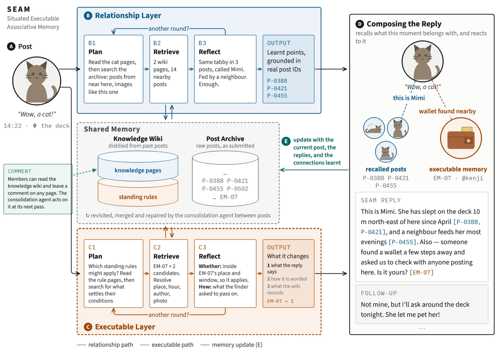
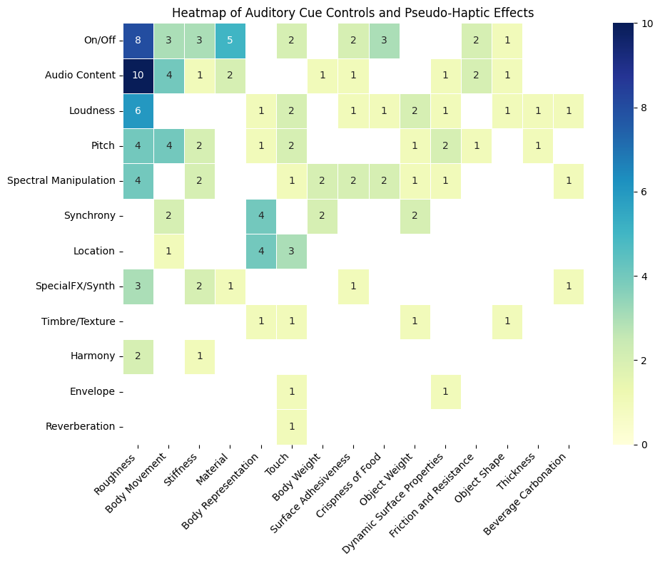
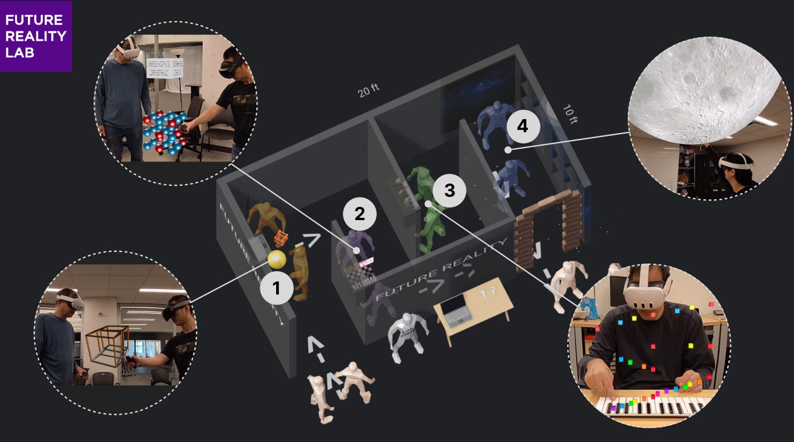

Papers, preprints, and ongoing work.
Cognition-in-Motion: Agents That Infer Latent Goals as Intent Takes Shape
A proactive desktop agent, and a human-centered benchmark for evaluating it
Keru Wang, with Janet Johnson; mentored by Saining Xie
Ongoing
About
People rarely sit down at a computer with a finished goal. As they search, read and compare, what they find in the task reshapes what they want, so the real goal often goes unstated and keeps moving. We are building a proactive desktop agent that watches natural computer use, reasons about the latent goal behind it and how the task is shaping it, and offers the help that brings the person closer to that goal.
Concretely, the agent reads the screen as the person works, keeps track of which earlier context still matters, and predicts the next step toward a goal the person has not stated. The aim is not to take over the task but to make that next step easier, for example by bringing back something seen earlier, opening what the person is about to need, or drafting what comes next, and to step in only when it helps.
Drawing on my background in HCI, I am making the evaluation human-centered. In real life there is no single ground truth for what someone intends, or for which help is the right one: the goal is still forming, and different people, or the same person on another day, would welcome different next steps. So instead of scoring agents against one scripted goal, the benchmark treats both the goal and good help as a distribution. Its tasks come from real scenarios, from stated to unstated goals and from step-by-step to open-ended work, and an agent's help is judged against what people actually go on to do and what they endorse in hindsight.
ReTrace: An Ambient, Personal Room-Based Agent That Observes, Understands, and Supports
Learns your routines, tasks and goals from how you interact with the objects in your room
Keru Wang, Reina Mun
Ongoing
About
ReTrace is an ambient, personal multimodal AI agent based in a person's own room. It observes how that person interacts with the physical objects around them, such as the kettle they come back to, the plant they water or the half-finished project on the desk, and learns from those interactions what their routines, ongoing tasks and goals are. It does this in a personal way, since the same object can mean something different for different people. To follow a person over weeks rather than moments, it keeps an object-oriented, long-horizon memory in which each object holds a history of how it was used and what that use meant.
Rather than speaking through a phone or a chat window, ReTrace supports the person through ambient cues from the room itself, such as light, or a projection onto a surface or the object in question, to help them pick a task back up, remember something at the right moment or keep a habit going. We focus the evaluation on well-being: whether this support makes daily life in the room better for the person, not only whether the agent's guesses are right.
Clips: a home from CASTLE 2024 replayed as a schematic 3D model (sped up), and the agent's memory over one day of EgoLife.

A shared memory for a community that connects, reveals, and acts
Keru Wang, Michael Xu, Ken Perlin, Nebojsa Jojic, Andrzej Banburski-Fahey
Preprint on arXiv
arXiv | PDF
Abstract
In a group, what each person knows sits apart from everyone else's, and whether those pieces ever meet depends on who happens to talk to whom. Taking inspiration from how a single mind works with memory, we built a shared memory that does the same for a community, prototyped as a social app. Members post everyday moments; LLM agents work out how fragments relate, distill knowledge about the group, and reply in a situated and associative way, while instructions embedded in posts shape how the system behaves. We deployed SEAM to 46 people in a co-located community with no task assigned and ran a follow-up workshop with 14. Members shared their days, questioned the memory about their community, and instructed it to track routines and run games, and its replies introduced them to people and subjects they had never encountered.
An Investigation of Proactive AI Agents for Reducing Idea Stagnation in Group Brainstorming
A proactive agent that steps in when group ideation stalls
Keru Wang, Pincun Liu, Saining Xie, Ken Perlin
Under review — preprint available upon request
Abstract
We designed a proactive AI agent that monitors group brainstorming and intervenes at opportune moments to counter idea stagnation. Through two user studies with 18 participants, we found that the proactive agent boosted idea generation, depth, and novelty compared to a reactive baseline, though users still preferred reactive support for its greater sense of control.
Should I Speak Up? Aligning Proactive AI Interventions with Human Expectations in Group Brainstorming
When should an AI speak up in a group discussion?
Keru Wang, Pincun Liu, Saining Xie, Ken Perlin
Under review — preprint available upon request
Abstract
We explore how proactive AI agents can step in at the right moments to keep group brainstorming productive and natural. Using a custom LLM system that monitors discussions and explains its reasoning, we compared its timing judgement to expert evaluations. The study uncovers what makes AI interventions feel helpful versus disruptive, guiding the design of more intuitive and collaborative AI partners.
VR shared control for guiding teams of drones
Lou De Bel-Air, Luca Morando, Ruitao Chen, Keru Wang, Benjamin Jarvis, Charbel Toumieh, Yang Zhou, Ken Perlin, Dario Floreano, Giuseppe Loianno
IEEE ICRA 2026
arXiv | PDF | Video
Abstract
We developed a VR-based shared control framework that allows operators to guide teams of drones in complex, unknown environments. A motion-primitive planner integrates real-time user input to generate collision-free trajectories, while an admittance controller enables flexible human influence. Experiments show that this immersive, human-in-the-loop approach enhances obstacle avoidance, coordination, and operator efficiency.

How sound can create a sense of touch
Keru Wang, Yi Wu, Pincun Liu, Zhu Wang, Agnieszka Roginska, Qi Sun, Ken Perlin
AM.ICAD 2025
Paper | PDF
Abstract
This survey explores how auditory cues can evoke pseudo-haptic sensations, offering a cost-effective alternative to traditional haptic devices. We review existing research on audio-influenced pseudo-haptics, summarize mappings between sound and touch perception, and outline future opportunities for creating more immersive and accessible interactive systems.
Modular actuated beams for shape-changing surfaces and spaces
Yuhan Wang, Keru Wang, Zhu Wang*, Ken Perlin*
ACM TEI 2025
ACM | PDF | Video
Abstract
Robotecture is a scalable, cost-efficient shape-changing system using modular actuated beams to create dynamic surfaces and enclosures. Its flexible, space-efficient design enables applications ranging from tabletop displays and smart storage systems to smart architecture.
Sketching landscapes in mid-air with a generative model
Yushen Hu, Keru Wang, Yuli Shao, Jan Plass, Zhu Wang*, Ken Perlin*
ACM VRST 2024 🏆 Best Paper Award
ACM | PDF | Video
Abstract
We present a VR-based terrain generation system that uses hand gestures and a generative model for fast landscape prototyping. Users draw and modify mid-air strokes to outline shapes, and a Conditional GAN, trained on real terrains' height maps, generates realistic landscapes blending user input with training features.
Directing tabletop robots by talking about objects, not robots
Keru Wang, Zhu Wang, Ken Nakagaki, Ken Perlin
ACM DIS 2024
ACM | PDF | Video
Abstract
The system lets users intuitively use 'object-level' instructions to control a multi-robot setup to manipulate tabletop objects via gestures, GUI, tangible inputs, and speech. Robots collectively execute commands through a generalizable algorithm, enabling high-level, object-focused multimodal interactions.

Spatial audio for shared, co-located XR
Yi Wu, Agnieszka Roginska, Keru Wang, Zhu Wang, Ken Perlin
ICAD 2024
PDF
Abstract
This paper presents the ongoing development of a spatial audio system for co-located, multi-participant, extended reality (CMXR) experiences. By integrating spatial audio and informative auditory displays, the system can enhance the sense of immersion and presence among participants and facilitate collaboration.
Gaze-aware 3D photos that show who is looking at whom
Zhenyi He, Keru Wang, Brandon Yushan Feng, Ruofei Du, Ken Perlin
ACM UIST 2021
ACM | PDF | Video
Abstract
GazeChat is a remote conferencing system that uses gaze-aware 3D profile photos to enrich online conversations. Through webcam-based gaze tracking and neural rendering, GazeChat redirects participants' gaze to accurately reflect who they’re looking at, enhancing communication and engagement.
Interactive systems shown at SIGGRAPH, SIGGRAPH Asia, and the MIT Museum.
Co-creating fractal art and music together in VR
Pincun Liu, Keru Wang, Yi Wu, Xiaoan Liu, Yushen Hu, Zhu Wang, Agnieszka Roginska, Ken Perlin
ACM SIGGRAPH Asia XR 2025
ACM | PDF | Video
Abstract
Celestial Blossom is a collaborative, meditative VR experience where participants co-create generative fractal art through hand-drawn sketches, transforming movements into evolving audiovisual symphonies. Set in a celestial void, strokes morph into glowing fractal particles, from microscopic grains to cosmic stars, each shaping sonic textures and evolving into an immersive soundscape. Multiplayer interaction allows users to weave their creations into a shared immersive composition. At the end, participants receive a printed rendering of their artwork, which can be scanned to revisit the fractals and melodies they created in VR.
Co-designing physical objects with multimodal XR
Keru Wang, Pincun Liu, Yushen Hu, Xiaoan Liu, Zhu Wang, Ken Perlin
ACM SIGGRAPH Asia XR 2024
ACM | PDF | Video
Abstract
Our collaborative XR system integrates physical and virtual design spaces, superimposing visual modifications on physical objects via video passthrough. With multimodal inputs, real-time object tracking, and 3D annotations, it accelerates design iterations for digital prototyping.
Bringing non-VR instructors into the VR classroom
Keru Wang, Zhu Wang, Ken Perlin
ACM SIGGRAPH Immersive Pavilion 2023
ACM | PDF | Video
Abstract
We developed a system that allows non-VR instructors to use hand-held devices, like smartphones and tablets, to explore VR content and interact with fully immersed students. Instructors can observe the VR environment, switch between students’ views, and interact within the VR world, while students view real-time video streams of both the physical space and the instructor.
A sand table for shaping landscapes by hand, with terrain analysis projected back onto the sand
Keru Wang (lead artist), with the MIT Tangible Media Group
Permanent exhibition, MIT Museum, 2022
About | Live simulator | Gallery
About
A table of sand for shaping landscapes by hand. As the sand moves, the table reads its new shape and projects an analysis of the terrain back onto it: its height, its contour lines, and where rain would run off it, while a screen beside it shows the same landscape in 3D. I led the design and development of this version, made with the MIT Tangible Media Group; it is on permanent view in the MIT Museum's Radical Atoms exhibition. The first SandScape was made in 2003 by Hiroshi Ishii's Tangible Media Group with the Senseable City Lab.
Mixed reality built around how different people like to work
Keru Wang, Zhu Wang, Karl Rosenberg, Zhenyi He, Dong Woo Yoo, Un Joo Christopher, Ken Perlin
ACM SIGGRAPH Immersive Pavilion 2022
ACM | PDF | Video
Abstract
Our project combines immersive VR, multitouch AR, real-time volumetric capture, motion capture, robotically-actuated tangible interfaces at multiple scales, and live coding, in service of a human-centric way of collaborating.